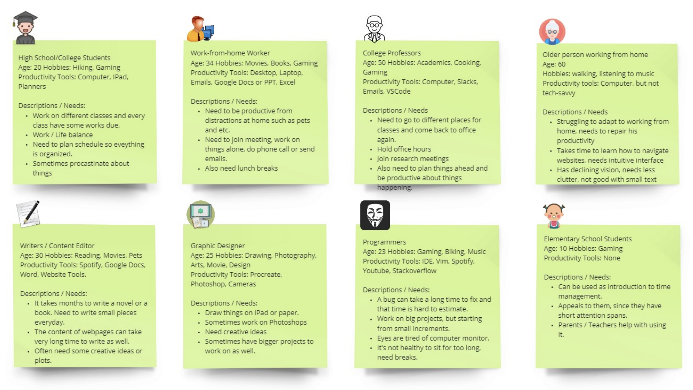
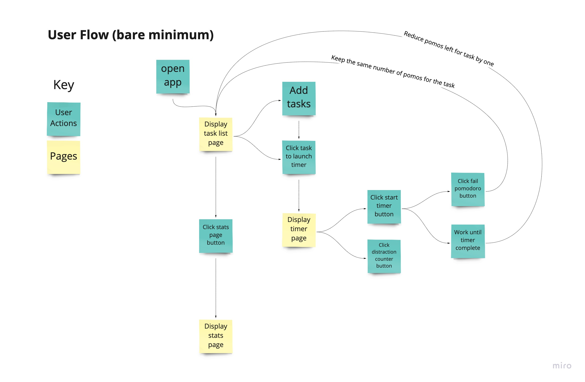
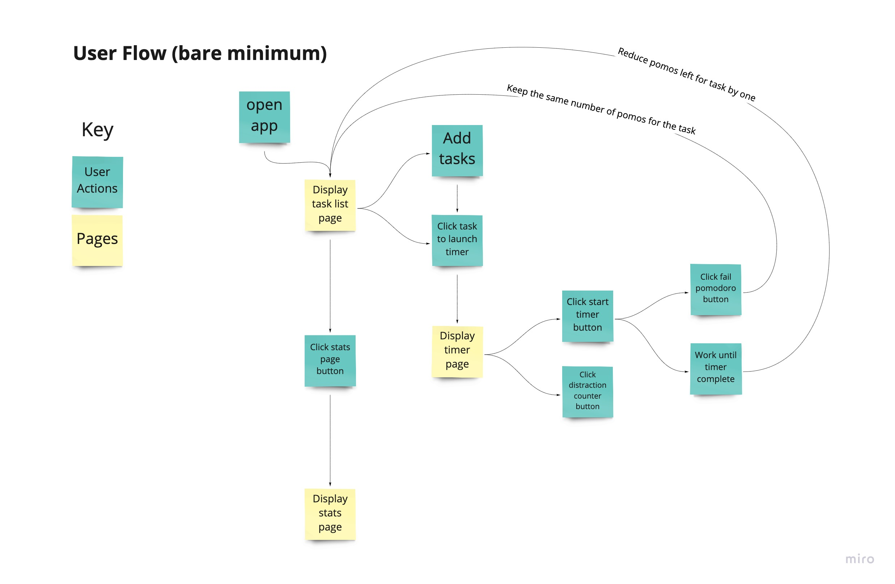
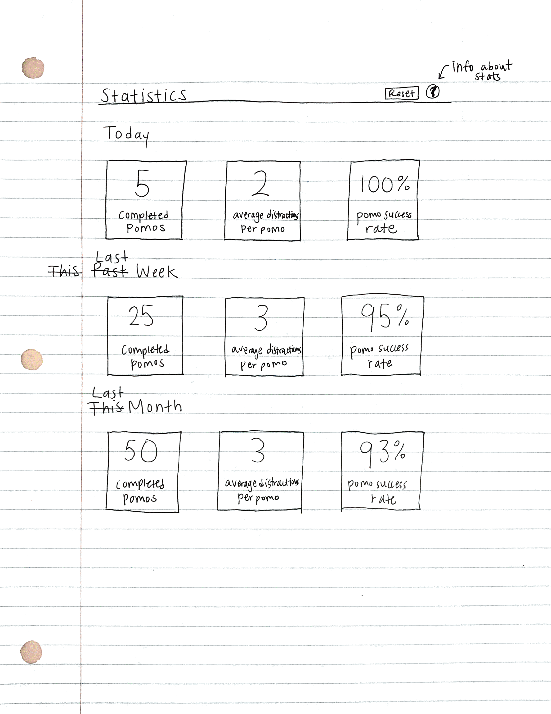

Pomodoro App
A to-do list and pomodoro timer web application
Project Overview
Software Engineering Course Project
Duration: 10 weeks (Jan-Mar 2021)
Team: 9 members
My main role: user interface design
Problem: Struggling with Time Management
Many college students have a lot to balance on their plate, such as school work, extracurricular activities, jobs, social life, and sleep. However, there’s only a limited amount of time in a day, so students need to make sure they are using their time wisely. There are also many distractions that keep students from completing their work, such as scrolling endlessly on social media, watching YouTube videos, or playing video games. The pomodoro timer technique is a tool that students can use to reduce these distractions and get their work done in manageable chunks of time. By getting their assignments done more efficiently, students can have more time to relax and enjoy other fun activities with friends.
How might students remember deadlines and eliminate distractions while working in order to increase productivity and work more efficiently?User Personas
Although we initially created this web application with students as the priamry target audience, we also explored other possible users that could benefit from a productivity tool.
Brainstorming Features
Next, we brainstormed what features to include in our application. We also drew out the flow of how a user would interact with the application. In the brainstorming phase, we included a variety of features that we thought would benefit students, but these were narrowed down to only the essential features later on in order to maximize the usability of the application.
 

Initial Design: Paper Sketches
I first approached the visual design by sketching out on paper what the interface could look like. I also started narrowing down the features and user actions for each of the pages.
To-Do List Page

Timer Page

Statistics Page
Digital Wireframes and Feedback
After sketching on paper, I started creating digital wireframes and got feedback on the designs from my other teammates (shown on the sticky notes).
To-Do List Page

Timer Page

Visual Design Elements
Color Palette
Font & Icons
Font: Poppins
I chose this font because of it's clarity and ease of reading. I also selected icons for the buttons and other aspects of the design so that there wouldn't be too much text cluttering the user interface.
Final High-Fidelity Prototype
Finally, I created an interactive high-fideltiy protoype in Figma that the rest of my team worked on implementing.